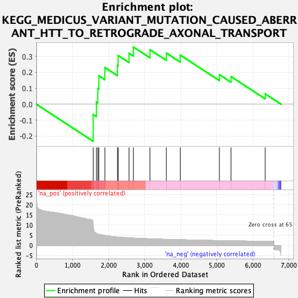
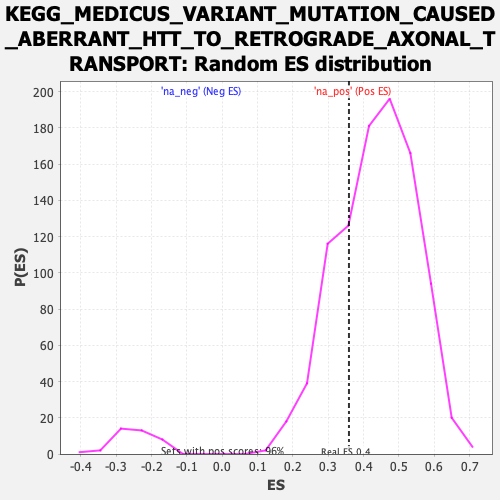

| | | Dataset | DGErank_significant |
| Phenotype | NoPhenotypeAvailable |
| Upregulated in class | na_pos |
| GeneSet | KEGG_MEDICUS_VARIANT_MUTATION_CAUSED_ABERRANT_HTT_TO_RETROGRADE_AXONAL_TRANSPORT |
| Enrichment Score (ES) | 0.3585747 |
| Normalized Enrichment Score (NES) | 0.8218831 |
| Nominal p-value | 0.7577963 |
| FDR q-value | 0.7602635 |
| FWER p-Value | 0.995 |
Table: GSEA Results Summary

Fig 1: Enrichment plot: KEGG_MEDICUS_VARIANT_MUTATION_CAUSED_ABERRANT_HTT_TO_RETROGRADE_AXONAL_TRANSPORT
Profile of the Running ES Score & Positions of GeneSet Members on the Rank Ordered List

Fig 2: KEGG_MEDICUS_VARIANT_MUTATION_CAUSED_ABERRANT_HTT_TO_RETROGRADE_AXONAL_TRANSPORT: Random ES distribution
Gene set null distribution of ES for KEGG_MEDICUS_VARIANT_MUTATION_CAUSED_ABERRANT_HTT_TO_RETROGRADE_AXONAL_TRANSPORT